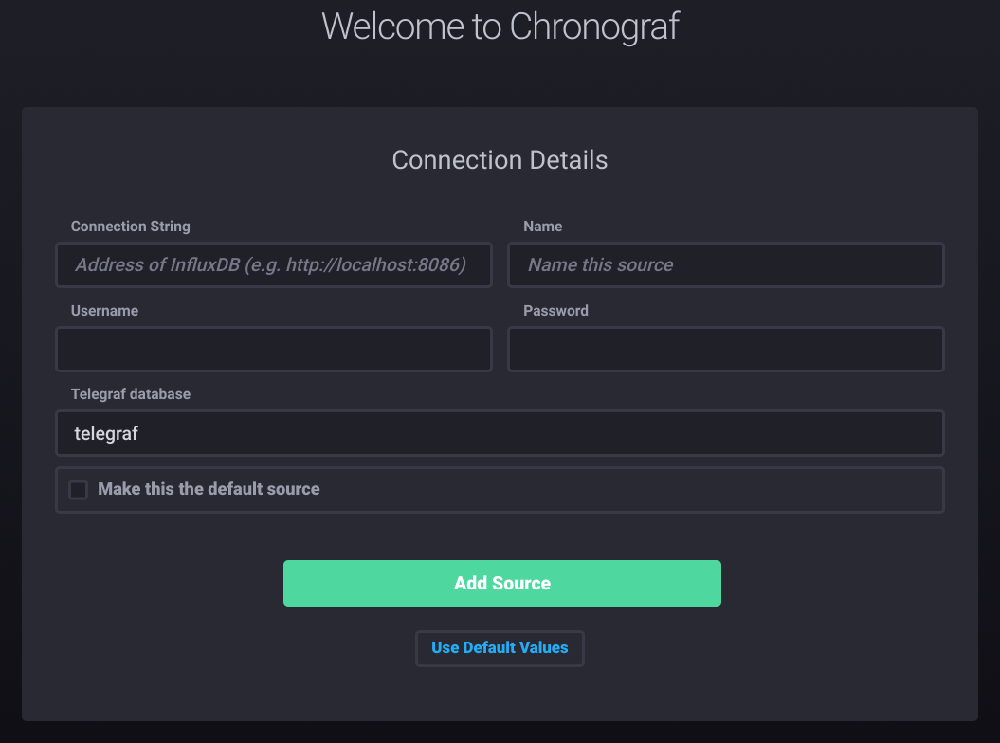

The InfluxData TICK (Telegraf, InfluxDB, Chronograf, Kapacitor) stack is a modern solution for system monitoring. In this post, I describe a way to monitor my homemade router / firewall and other systems. The main drawback of InfluxDB is the high memory consumption.
Add additional repository
- Add InfluxData secret key
$ curl -sL https://repos.influxdata.com/influxdb.key | sudo apt-key add -
- Add InfluxData repository
$ echo "deb https://repos.influxdata.com/debian stretch stable" | sudo tee /etc/apt/sources.list.d/influxdb.list
- Update repository
$ sudo apt-get update
Influxdb
- Install InfluxDB
$ sudo apt-get install influxdb
- Configure firewall
# Influxdb
sudo iptables -A INPUT -i lo -d 127.0.0.1 -p tcp --dport 8086 -m conntrack --ctstate NEW,RELATED,ESTABLISHED -j ACCEPT
sudo iptables -A OUTPUT -o lo -d 127.0.0.1 -p tcp --dport 8086 -m conntrack --ctstate NEW,RELATED,ESTABLISHED -j ACCEPT
# Allow outgoing and incoming established connection
sudo iptables -A OUTPUT -o lo -s 127.0.0.1 -m conntrack --ctstate RELATED,ESTABLISHED -j ACCEPT
sudo iptables -A INPUT -i lo -s 127.0.0.1 -m conntrack --ctstate RELATED,ESTABLISHED -j ACCEPT
- Start InfluxDB
$ sudo systemctl start influxdb
Install required monitoring tools
Disk monitoring
- Install SMART disk tool
$ sudo apt-get install smartmontools
- Enabled SMART
$ sudo smartctl -s on /dev/sda
- test
sudo smartctl --info --attributes --health -n standby --format=brief /dev/sda
Telegraf
- Install Telegraf
$ sudo apt-get install telegraf
- Edit configuration
$ sudo nano /etc/telegraf/telegraf.conf
[[inputs.conntrack]]
files = ["ip_conntrack_count","ip_conntrack_max","nf_conntrack_count","nf_conntrack_max"]
dirs = ["/proc/sys/net/ipv4/netfilter","/proc/sys/net/netfilter"]
[[inputs.netstat]]
[[inputs.net]]
interfaces = ["enp1s0 enp2s0 enp3s0"]
[[inputs.iptables]]
use_sudo = false
use_lock = false
table = "filter"
chains = [ "INPUT" ]
# Processor Temperture
[[inputs.sensors]]
# SMART Disk (Doesn't work because SMART features require Telegraf 1.5)
[[inputs.smart]]
use_sudo = true
nocheck = "standby"
devices = [ "/dev/sda" ]
- Edit service capabilities
$ sudo systemctl edit telegraf.service
[Service]
CapabilityBoundingSet=CAP_NET_RAW CAP_NET_ADMIN
AmbientCapabilities=CAP_NET_RAW CAP_NET_ADMIN
- start Telegraf
$ sudo systemctl start telegraf
Chronograf
- Install Chronograf
$ sudo apt-get install chronograf
- start Chronograf
$ sudo systemctl start chronograf
-
Open Chronograf http://g8way.domain.net:8888
-
Enter information for telegraf source
Create the dashboard for my router/firewall
- CPU Load
SELECT mean("usage_idle")*-1+100 AS "mean_usage_idle" FROM "telegraf"."autogen"."cpu" WHERE time > :dashboardTime: AND "host"='g8way' GROUP BY :interval: FILL(null)
- CPU Temp
SELECT mean("temp_input") AS "mean_temp_input" FROM "telegraf"."autogen"."sensors" WHERE time > :dashboardTime: GROUP BY :interval: FILL(null)
- CPU Power
SELECT mean("power_average") AS "mean_power_average", mean("power_average_interval") AS "mean_power_average_interval", mean("power_crit") AS "mean_power_crit" FROM "telegraf"."autogen"."sensors" WHERE time > :dashboardTime: GROUP BY :interval: FILL(null)
- Uptime (Days)
SELECT last("uptime")/86400 AS "last_uptime" FROM "telegraf"."autogen"."system" WHERE time > :dashboardTime: GROUP BY :interval: FILL(none)
- Memory Usage
SELECT mean("used") AS "mean_used" FROM "telegraf"."autogen"."mem" WHERE time > :dashboardTime: AND "host"='g8way' GROUP BY :interval: FILL(null)
